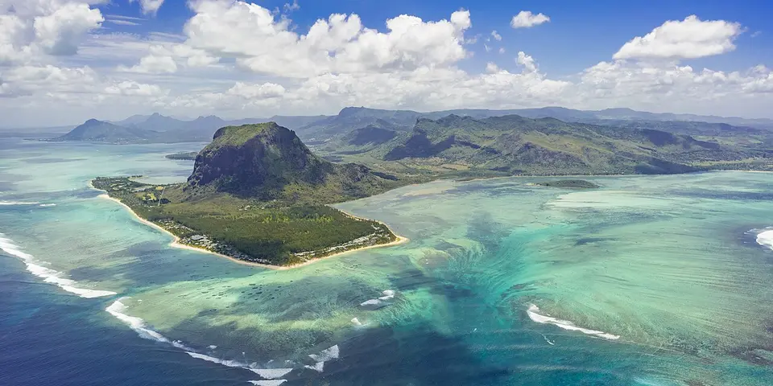

Sub-Saharan Africa
Mauritius on a budget
Mauritius is cheaper than its resort image, with turquoise lagoons, the Le Morne hike, rainforest trails in Black River Gorges and Port Louis street food like dholl puri.
Photo: Christopher Brown, CC0, via Wikimedia Commons

Classic route
Port Louis, Le Morne and Black River Gorges. 1 week.
Before you go
Flights to Le Morne: Skyscanner · Kiwi.com · Google Flights
Hostels and guesthouses in Le Morne · Black River Gorges · Port Louis · Grand Baie
Tours and tickets: Le Morne · Black River Gorges
Mobile data: Mauritius eSIM
Travel insurance: SafetyWing
How much 11 places in Mauritius cost
Daily budgets per person in US dollars: a hostel dorm or simple guesthouse, local food, local transport and the usual entry fees.
-
Le Morne
Scramble up a UNESCO-listed mountain for views over turquoise lagoons, then watch kitesurfers carve across the reef below.
Bed $30 · Food $12 · Getting around $5 · Extras $4
Budget tip: Buses are cheap; guesthouses beat resorts on price. Start the Le Morne hike early to avoid the midday heat.
$51per day -
Black River Gorges
Rainforest trails, waterfalls and the seven-coloured earths of Chamarel, with endemic birds and sweeping gorge viewpoints.
Bed $25 · Food $12 · Getting around $5 · Extras $3
Budget tip: Hike from Pétrin to Black River, downhill most of the way, then catch a local bus back. Pack water and snacks, as shops are scarce.
$45per day -
Port Louis
A busy capital with a central market, cheap street food and the Aapravasi Ghat heritage site.
Bed $30 · Food $10 · Getting around $3 · Extras $3
Budget tip: Buses are cheap and reach most of the island. Eat dholl puri at the market for a filling snack.
$46per day -
Grand Baie
A northern bay with calm beaches and boat trips to the offshore islets, plus bars and cheap eats.
Bed $30 · Food $12 · Getting around $3 · Extras $5
Budget tip: Stay in guesthouses rather than resorts, and eat at roadside stalls. Public beaches are free and open to all.
$50per day -
Curepipe
Cool, rainy highland town around Trou aux Cerfs, a dormant volcanic crater with a walking ring offering views across the island to the coast.
Bed $25 · Food $10 · Getting around $3 · Extras $2
Budget tip: The crater rim walk is free; pair it with the nearby botanical garden and market, and pack a rain jacket since the plateau gets frequent showers.
$40per day -
Mahébourg
A fishing town on a turquoise lagoon with a lively Monday market and boats bobbing by the waterfront.
Bed $25 · Food $10 · Getting around $3 · Extras $3
Budget tip: Boat trips to Île aux Aigrettes are cheap. Visit the Monday market for snacks and local produce.
$41per day -
Pamplemousses
Historic Sir Seewoosagur Ramgoolam Botanical Garden with giant Victoria water lilies, talipot palms, spice trees and the nearby L'Aventure du Sucre sugar museum.
Bed $25 · Food $10 · Getting around $3 · Extras $6
Budget tip: Go early to beat the heat and tour groups. Buses from Port Louis Immigration Square stop at the garden gate, and an official guide is optional.
$44per day -
Chamarel
The rippled Seven Coloured Earth dunes and a tall waterfall plunging into a forested gorge in the south-west.
Bed $25 · Food $12 · Getting around $5 · Extras $5
Budget tip: Buses are infrequent; hire a scooter for the south-west and add Black River Gorges.
$47per day -
Flic en Flac
Long west coast beach with a sheltered lagoon, casuarina shade, sunset picnics and food vans selling dholl puri and gateaux piments.
Bed $30 · Food $12 · Getting around $4 · Extras $4
Budget tip: Self-catering studios beat hotel prices here. Eat at the beach food trucks, and catch the bus from Port Louis via Bambous instead of taxis.
$50per day -
Rodrigues
A quiet island with coastal walks, a huge lagoon for snorkelling and kitesurfing, and a giant tortoise reserve.
Bed $30 · Food $12 · Getting around $4 · Extras $5
Budget tip: Fly or take the ferry from Mauritius. Guesthouses often include home-cooked Creole meals.
$51per day -
Île aux Cerfs
Islet off the east coast with turquoise sandbars, shallow swimming lagoons and a short boat run past Grande Rivière Sud-Est waterfall.
Bed $30 · Food $14 · Getting around $8 · Extras $15
Budget tip: Skip the packaged catamaran tours; take a public ferry from Pointe Maurice near Trou d'Eau Douce and bring your own lunch and water to the island.
$67per day
Know before you go
Mauritius on a budget: the basics
Currency
$1 = 48.00 MUR
Mauritian rupee
| Dollars to MUR | MUR to dollars | ||
|---|---|---|---|
| $1 | 48.00 MUR | 10 MUR | $0.208 |
| $5 | 240 MUR | 50 MUR | $1.04 |
| $10 | 480 MUR | 100 MUR | $2.08 |
| $20 | 960 MUR | 500 MUR | $10.42 |
| $50 | 2,400 MUR | 1,000 MUR | $20.83 |
| $100 | 4,800 MUR | 5,000 MUR | $104 |
A typical day here (about $50) is roughly 2,400 MUR.
Mid-market rate on 2026-10-05. Cash machines and exchange desks pay a little less.
Getting around
Public buses reach almost every village cheaply, and the Metro Express light rail runs from Port Louis toward Curepipe. Buses to Le Morne and the southwest are slower, so many visitors rent a car or scooter for a few days. Taxis aren't metered, so agree the fare first.
Where to sleep
Guesthouses, self-catering apartments and small family hotels are the budget picks, since hostels are rare. Book ahead for the December to January holidays.
What to eat
- Dholl puri: thin split-pea flatbread with curry and chutney
- Mine frit: fried noodles from Sino-Mauritian kitchens
- Gâteaux piments: crispy chili split-pea fritters
- Alouda: sweet milk drink with basil seeds and jelly
Money
Cards are widely accepted and ATMs are easy to find. Tipping is optional, and haggling is only normal at markets.
Phone data
SIMs from my.t or Emtel are easy to buy at the airport with a passport, and coverage is good across the island.
Heads up
Wear reef shoes in shallow lagoons, since sea urchins and stonefish are common.
Mauritius travel: quick answers
How much does a day in Mauritius cost on a budget?
About $50 a day for one person, from $40 in Curepipe to $67 in Île aux Cerfs. That covers a hostel dorm or simple guesthouse, local food, local transport and the usual entry fees, so a week runs about $350 before flights.
When is the best time to visit Mauritius?
May to November is the best time, with the most reliable weather for getting around.
What is the cheapest place to visit in Mauritius?
Curepipe, at about $40 a day. Cool, rainy highland town around Trou aux Cerfs, a dormant volcanic crater with a walking ring offering views across the island to the coast.
How long do you need in Mauritius?
Port Louis, Le Morne and Black River Gorges. 1 week.
How much is $1 in Mauritius?
One US dollar is about 48.00 Mauritian rupee (MUR), going by the mid-market rate on 2026-10-05. So $20 is roughly 960 MUR, and a typical budget day of $50 comes to about 2,400 MUR.
How do you get around Mauritius cheaply?
Public buses reach almost every village cheaply, and the Metro Express light rail runs from Port Louis toward Curepipe. Buses to Le Morne and the southwest are slower, so many visitors rent a car or scooter for a few days. Taxis aren't metered, so agree the fare first.
What food should you try in Mauritius?
Dholl puri, thin split-pea flatbread with curry and chutney. Mine frit, fried noodles from Sino-Mauritian kitchens. Gâteaux piments, crispy chili split-pea fritters. Alouda, sweet milk drink with basil seeds and jelly.
Planning around the seasons? See where to go in May, or compare the cheapest countries nearby.
Similar budgets nearby
- South Africa $52/day
- Angola $48/day
- Mozambique $54/day
- Cape Verde $45/day